調査概要と測定方法
政策的背景
日本政府は2021年に「孤独・孤立対策担当大臣」を設置（英国に次ぎ世界第2番目）。2023年制定・2024年4月施行の「孤独・孤立対策推進法」に基づき、143施策を盛り込んだ重点計画が策定されている。令和6年度実態調査は政策効果の把握と今後の対策立案を目的に実施された。
測定方法
| 測定法 | 内容 | 尺度 |
|---|---|---|
| UCLA孤独感尺度 | 「仲間はずれに感じる」「孤立していると感じる」「人と切り離されていると感じる」の3問合計 | 3〜12点 |
| 直接質問 | 「孤独を感じることがあるか」を直接問う | 5段階 |
| 調査概要 | 内容 |
|---|---|
| 調査主体 | 内閣官房 孤独孤立対策担当室 |
| 調査対象 | 全国の一般市民（16歳以上） |
| 有効回答数 | 10,871人（孤独感）/ 8,084人（各種支援） |
| 調査年度 | 令和6年度（2024年度） |
UCLA孤独感尺度は米国カリフォルニア大学ロサンゼルス校が開発（Russell, 1996）した国際標準の測定ツール。日本語版3項目版はCronbach's α = 0.89以上と高い内的一貫性が確認されており、内閣府の全国調査でも採用されている。注2
UCLA孤独感スコア分布（全体）
（10-12点）
（7-9点）
（4-6点）
孤独感の実態
2.1 全体の孤独感分布（都市規模別）
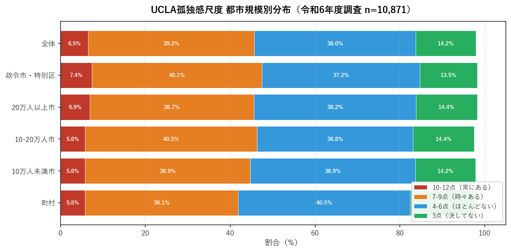
都市規模による差は±1.6pt 程度と小さく（高スコア率5.8〜7.4%）、孤独感は特定の地域に偏らない全国的な課題であることが確認された。政令市・特別区でやや高め（7.4%）が観測されており、都市部の匿名性・繋がりの希薄化が一因として考えられる。
2.2 年齢別の孤独感
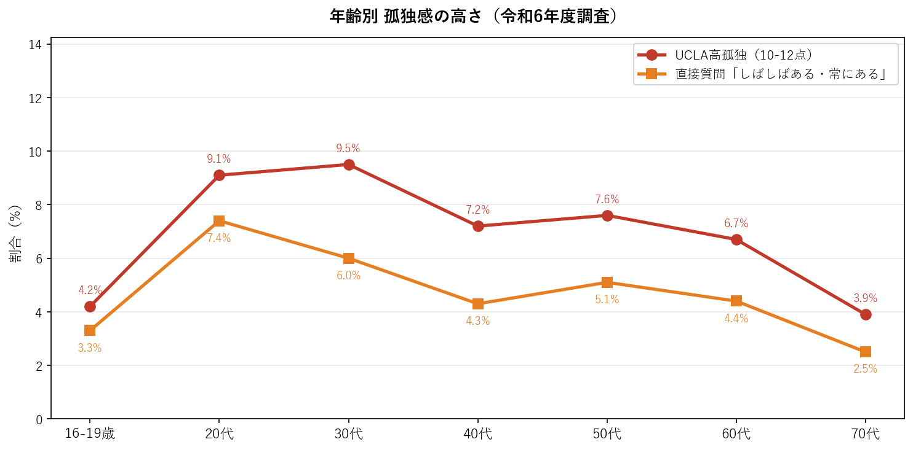
| 年齢層 | UCLA高スコア（10-12点） | 直接質問「しばしばある」 | 評価 |
|---|---|---|---|
| 16-19歳 | 4.2% | 3.3% | 低 |
| 20代 | 9.1% | 7.4% | 高 |
| 30代 | 9.5% | 6.0% | 最高 |
| 40代 | 7.2% | 4.3% | 中 |
| 50代 | 7.6% | 5.1% | 中 |
| 60代 | 6.7% | 4.4% | 中 |
| 70代 | 3.9% | 2.5% | 最低 |
| 全体 | 6.5% | 4.3% | — |
最重要発見：20〜30代の孤独感が全年齢で最高水準。 UCLA高スコアは20代9.1%、30代9.5%と全体平均（6.5%）の約1.5倍。就職・転居・人間関係の断絶等のライフイベントが集中する時期と重なる。野村総合研究所の2024年調査でも、20代社員の31.9%が「深刻な孤独感」を抱えていることが報告されている。注3
2.3 世帯構成別の孤独感
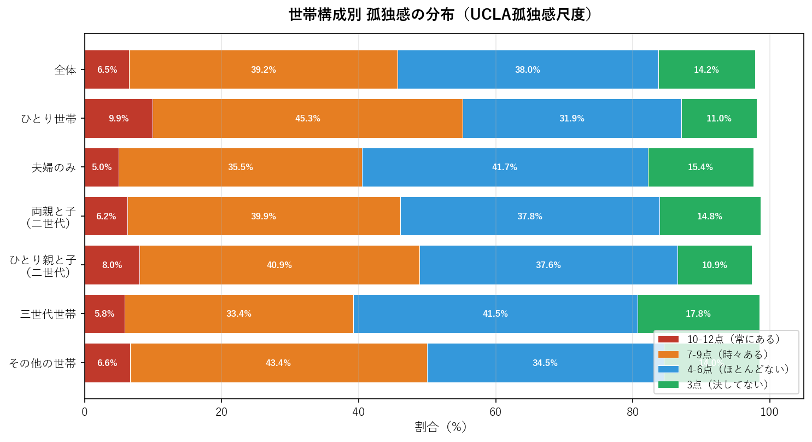
ひとり世帯の孤独感が最も深刻（UCLA高スコア9.9%）。 夫婦のみ世帯（5.0%）が最低であり、安定したパートナーシップが孤独感の保護因子として機能していることが示唆される。
2.4 就業状況別の孤独感
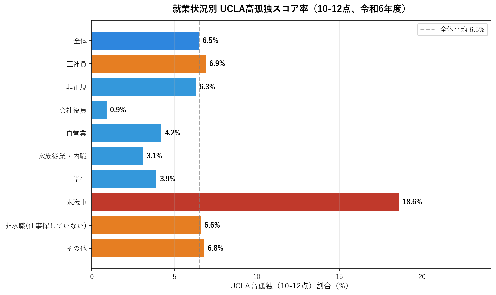
求職中（仕事を探している）の18.6%は全カテゴリで突出して高く、全体平均の約2.9倍。 就業不安定・経済的不安が孤独感の強力な促進要因。一方、会社役員（0.9%）は最低であり、社会的地位と経済的安定が孤独感の緩衝として機能している可能性がある。
2.5 社会参加有無別の孤独感（クロス分析）
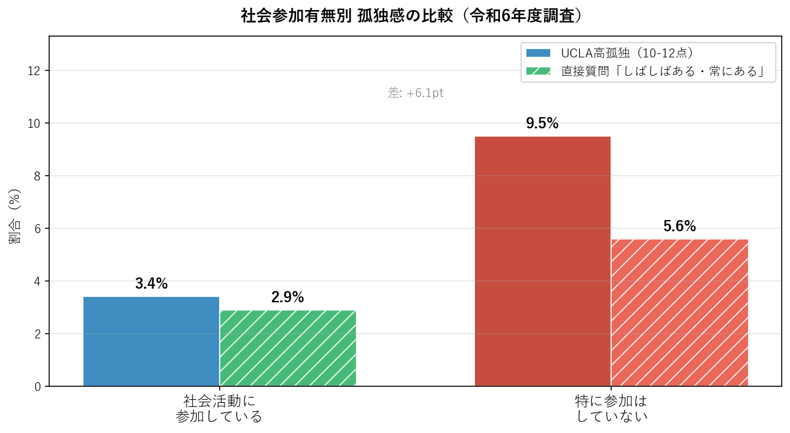
社会活動に参加している群のUCLA高スコアは3.4%に対し、参加していない群は9.5%（差：+6.1pt）。孤独感と社会参加の間に強い関連がある。ただし、因果の方向性（孤独だから参加しないのか、参加しないから孤独になるのか）は横断データのみからは確定できない。
社会的交流の実態
3.1 コミュニケーション手段別の頻度分布
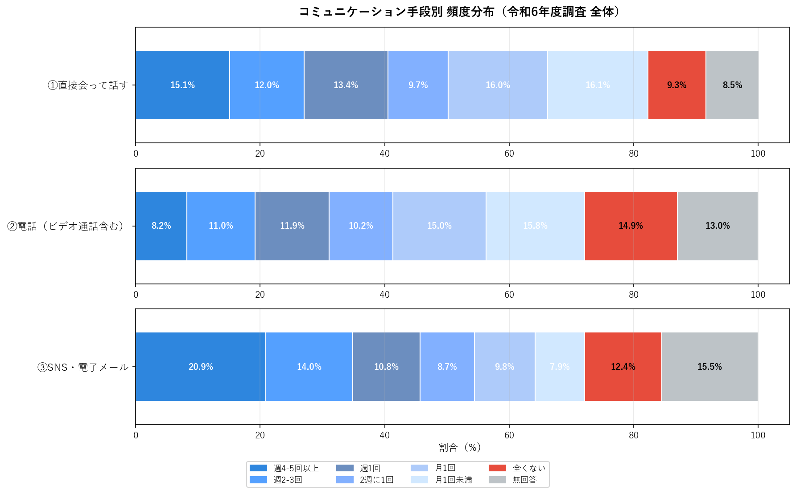
週4-5回以上（最多）
「全くない」
③SNS・電子メールが最も高頻度（週4-5回以上20.9%）で現代のコミュニケーションの主役となっている。直接会っての交流で「全くない」が9.3%と最も高く、対面交流の機会が失われた層の存在を示している。
3.2 年齢別コミュニケーション「全くない」率
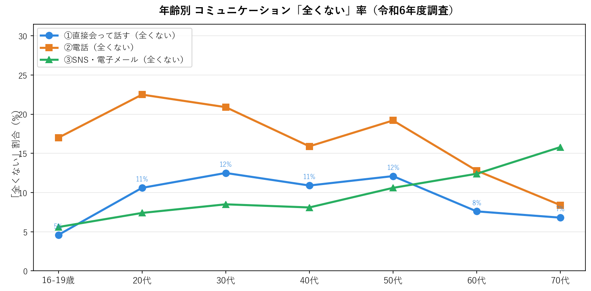
70代では直接会っての「全くない」率が16.5%（16-19歳の4.6%の3.6倍）と大幅に上昇。70代のSNS「全くない」率も高く、デジタルデバイドが高齢者のコミュニケーション手段を限定している。中年層（40-50代）では電話での「全くない」率が比較的高い傾向があり、仕事中心の生活スタイルや家族・友人との電話コミュニケーションの減少を反映していると考えられる。
社会参加の実態
4.1 社会活動への参加状況
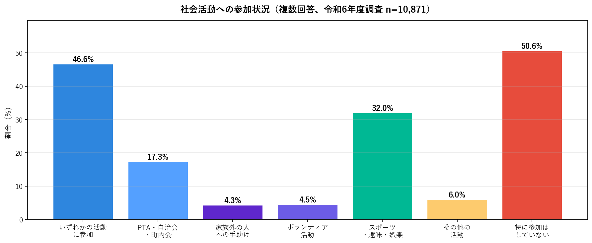
参加している
（過半数）
（最多活動）
4.2 年齢別社会参加率の推移
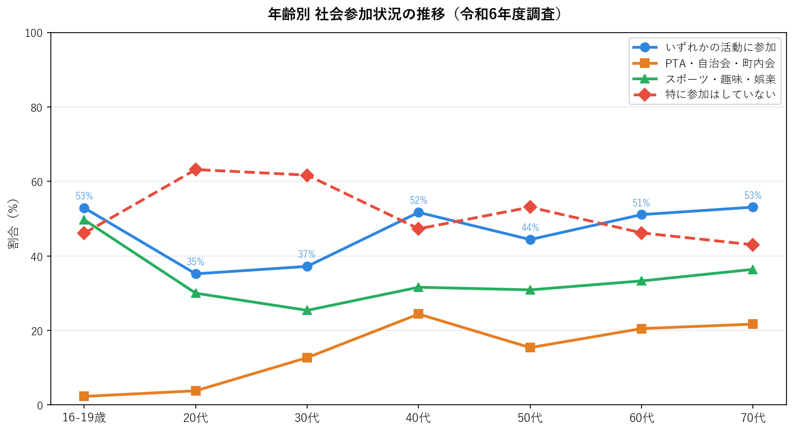
20代の「特に参加なし」率が63.2%と高く、若年層の社会参加率の低さが孤独感の高さと対応している。40代以降では参加率が回復し、70代では53.1%と高水準となる。
4.3 孤独感レベル別の社会参加率
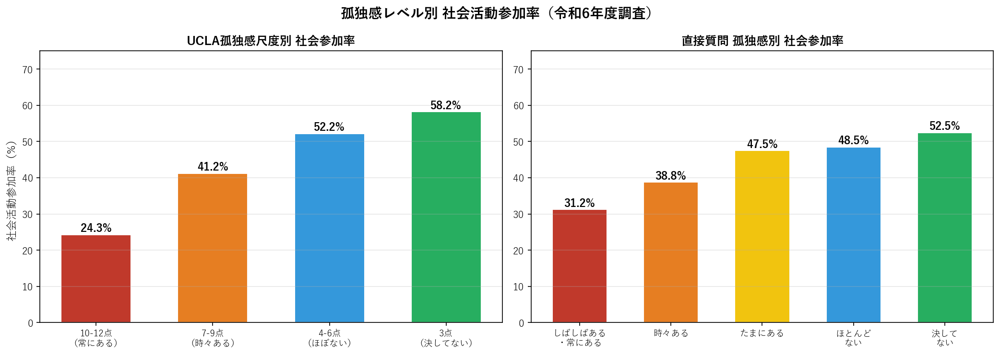
| UCLA孤独感スコア | 社会参加率 |
|---|---|
| 10-12点（常にある） | 24.3% |
| 7-9点（時々ある） | 41.2% |
| 4-6点（ほとんどない） | 52.2% |
| 3点（決してない） | 58.2% |
UCLA孤独感が最高（10-12点）の層では社会参加率が24.3%と全体平均（46.6%）の約半分に低下。孤独感と社会参加の間には明確な逆相関が確認される。
行政・NPO等からの支援状況
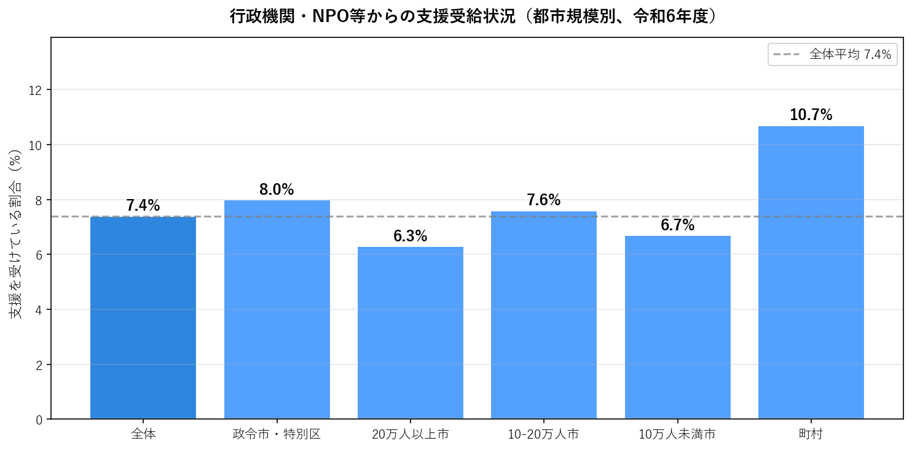
（最低値）
行政機関・NPO等からの支援を「受けている」のはわずか7.4%。約9割以上が公的支援を受けていない。都市部での支援アクセスのミスマッチが深刻な課題となっている。2021年の緊急対策として政府は約60億円の孤独・孤立対策NPO支援を実施したが、支援の届かない層が依然として多い。注4
生活満足度と孤独感の関係
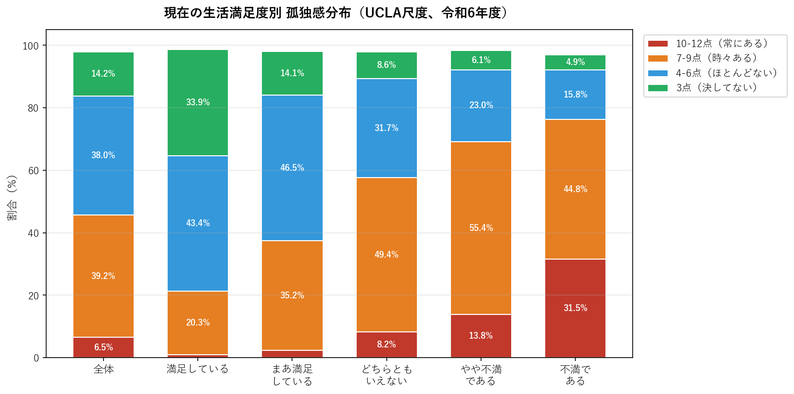
| 生活満足度 | UCLA高スコア（10-12点） | 全体（6.5%）比 |
|---|---|---|
| 満足している | 1.0% | ×0.15 |
| まあ満足している | 2.3% | ×0.35 |
| どちらともいえない | 8.2% | ×1.26 |
| やや不満である | 13.8% | ×2.12 |
| 不満である | 31.5% | ×4.85 |
「不満である」群のUCLA高スコア31.5%は「満足している」群（1.0%）の約31倍。生活満足度と孤独感は双方向の強い関連を持ち、互いに影響し合う構造が示唆される。
総合考察
7.1 孤独感に関連する主要因子（影響度順）
-
1
-
2
-
3
-
4
-
5
-
6
7.2 孤独・孤立の負のサイクル
特に求職中の若年層・単身世帯では、経済的不安定・社会的つながりの希薄さが複合的に作用している可能性が高い。
7.3 政策的示唆
支援非受給者対策（最重要課題）
92.6%が支援を受けていない現状を改善するために、支援情報の周知・ワンストップ相談窓口の充実が急務。2024年4月施行の「孤独・孤立対策推進法」に基づく143施策が着実に実施される必要がある。国際比較では日本の孤独感の頻度は英米（22〜23%）より低い（9%）が、慢性的孤独の割合が高い（35%超が10年以上）という特徴がある。注5
7.4 データの限界
- クロス集計データのみのため、因果関係の確認はできない
- 調査時点のスナップショットであり、年度比較には別ファイルのデータが必要
- 「無回答」層の特性が不明であり、選択バイアスの可能性がある
- オンライン調査の限界（デジタルデバイドを抱える高齢者の過少代表の可能性）